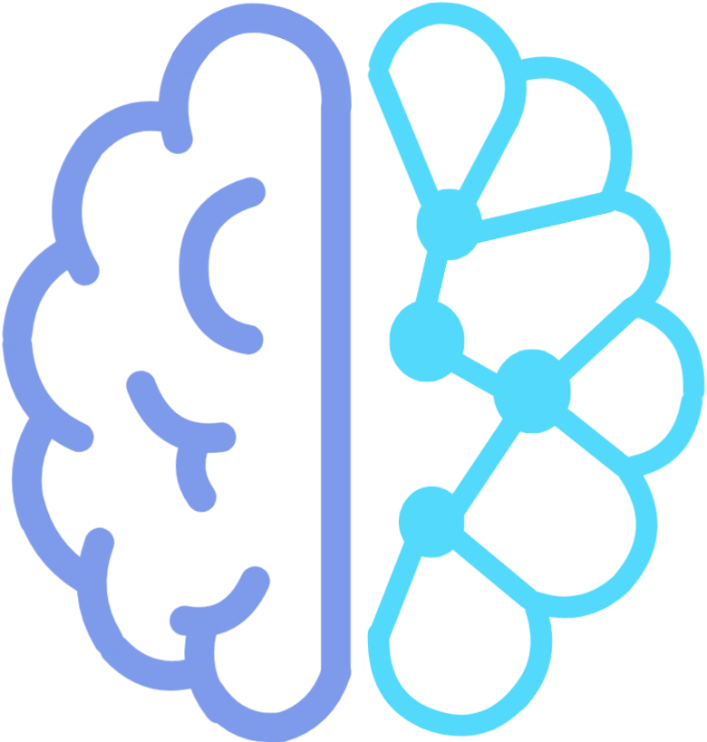
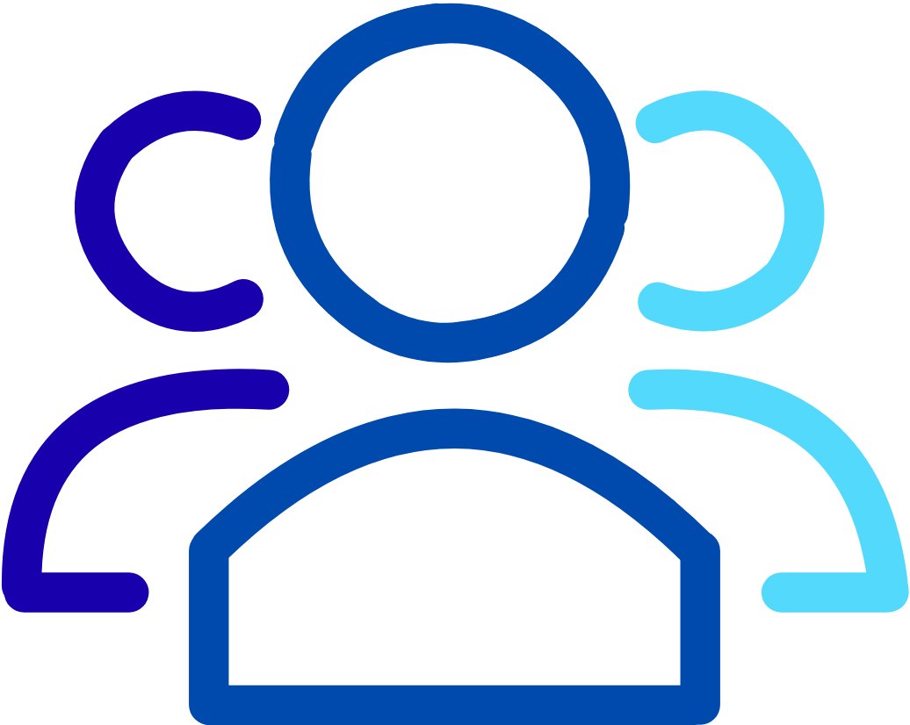

Fazer login
Início
Sobre nós
Serviços
Profissionais
Funcionamento
Excelência em
Neuropsicologia
Para todas as fases da vida.

Avaliação
neuropsicológica

Atendimento
especializado
Baseado em
evidências
Laudos
especializados
Whatsapp
(00)00000-0000
Localização
Google maps
Linhas de ônibus
XXXX/XXXX
Dúvidas frequentes:
● Quais profissionais atendem a ICON?
● Qual o período de atendimento?
● Para o que serve a neuropsicologia?
● Com qual idade eu devo fazer esses exames?
● A ICON aceita quais planos de saúde?
Redes sociais:
● Instagram:
@ICON
● Facebook:
@ICON
● LinkedIn:
@ICON
● Email:
contato@icon.com.br
Explore:
● Início
● Sobre nós
● Serviços
● Profissionais
● Funcionamento
● Agendar consulta
Serviços:
● Avaliação neuropsicológica
● Avaliação Psicológica
● Psicoterapia
● Reabilitação Neuropsicológica
● Avaliação Cognitiva
● Avaliação Infantil e Adolescente
● Orientação e Acompanhamento Familiar
● Emissão de Laudos e Relatórios
Profissionais:
● Neuropsicólogos
● Psicólogos
● Psiquiatras
● Neurologistas